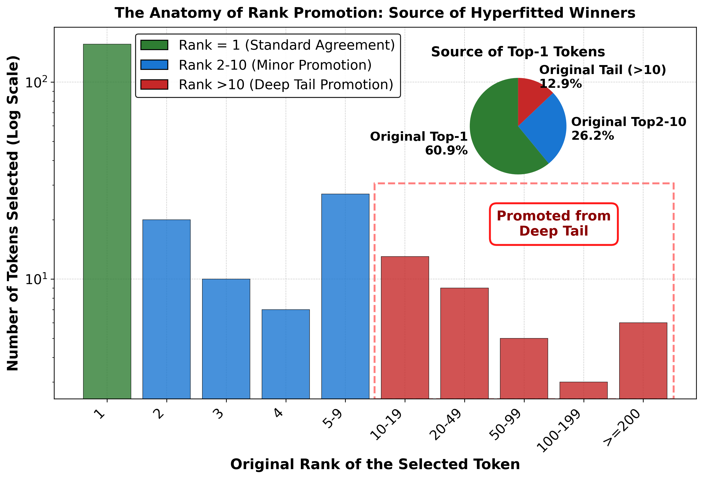
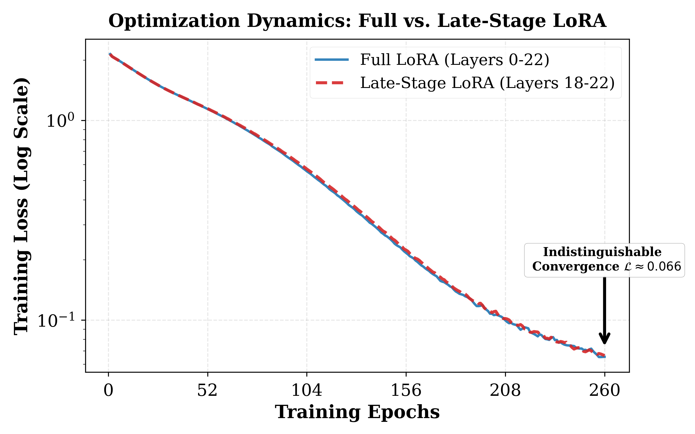
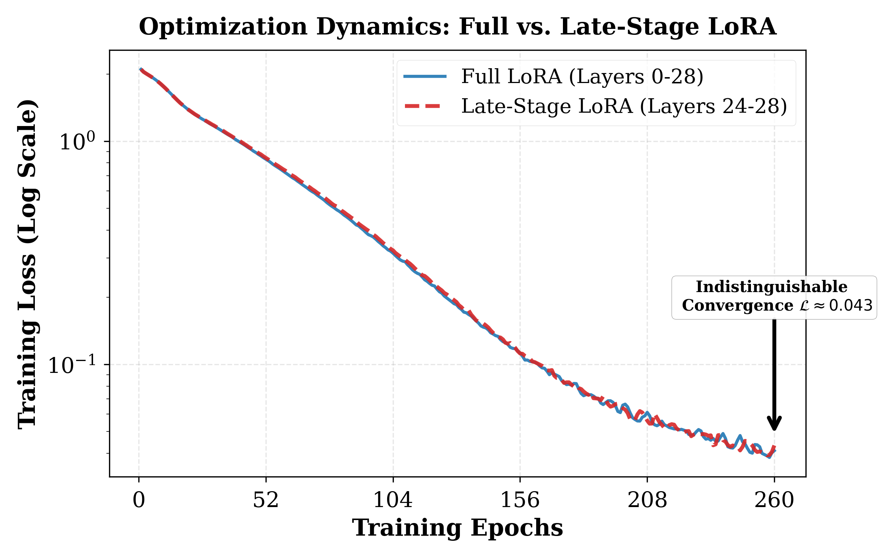
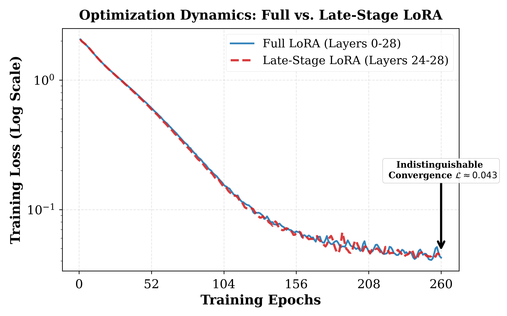

This paper reveals that hyperfitting improves greedy generation quality through a late-stage geometric expansion and rank reordering mechanism, fundamentally distinct from simple temperature scaling.
本文揭示了超拟合（hyperfitting）通过后期阶段的几何扩展和排名重排序机制提升贪婪生成质量，与简单的温度缩放有本质区别。该研究提供了对超拟合机制的深入理解，并引入了参数高效的Late-Stage LoRA策略。
Deep Note — hyperfitting
Key Takeaways - Hyperfitting is distinct from temperature scaling; entropy-matched controls show temperature scaling fails to replicate diversity gains (TTR 0.40 vs 0.68). - Hyperfitting relies on dynamic, context-dependent rank reordering, not static vocabulary reweighting. - The effect localizes to a 'Terminal Expansion' in the final transformer block, with a geometric feature space expansion of ΔDim ≈ +80.8. - Late-Stage LoRA, updating only the final 5 layers, suffices to replicate rank reordering dynamics, enabling parameter-efficient generation improvement.
0) Metadata
- Title: Beyond Temperature: Hyperfitting as a Late-Stage Geometric Expansion
- Alias: hyperfitting
- Authors: Meimingwei Li, Yuanhao Ding, Esteban Garces Arias, Christian Heumann
- arXiv ID: 2605.22579
- Published:
- Links:
- Abs: https://arxiv.org/abs/2605.22579
- HTML: https://arxiv.org/html/2605.22579v1
- PDF: https://arxiv.org/pdf/2605.22579
- Tags: hyperfitting, rank-reordering, terminal-expansion, late-stage-lora, llm-generation
- Domains: system_safety
- Rating: 5/5 (base 1 + quality 2 + observation 2)
1) Why-read
This paper reveals that hyperfitting improves greedy generation quality through a late-stage geometric expansion and rank reordering mechanism, fundamentally distinct from simple temperature scaling.
2) CRGP
C — Context
Large Language Models often suffer from repetitive loops in greedy decoding. Recent work discovered 'hyperfitting'—fine-tuning to near-zero loss on small datasets—surprisingly enhances generation diversity, but the mechanism was unknown. This paper investigates whether hyperfitting is merely learned temperature scaling or something more fundamental.
R — Related work
- Carlsson et al. (2025) first identified hyperfitting as a counterintuitive phenomenon improving greedy generation.
- Wiher et al. (2022), Shi et al. (2024), and others studied repetition in LLM generation.
- Fan et al. (2018), Holtzman et al. (2020) proposed stochastic decoding methods to reduce repetition.
- Ruan et al. (2025a) discussed 'over-memorization' as a potential scaffold for generalization.
G — Gap
While hyperfitting was known to improve generation, its underlying mechanism remained poorly understood. The extremely low-entropy output distributions suggested a possible equivalence to temperature scaling, but this hypothesis had not been rigorously tested. Additionally, whether the effect was due to static vocabulary bias or dynamic reordering was unknown.
P — Proposal
The authors systematically dissect hyperfitting through entropy-matched control experiments, synthetic injection ablations, and layer-wise geometric analysis. They demonstrate that hyperfitting is a dynamic rank reordering mechanism localized to a 'Terminal Expansion' in the final transformer layer, and introduce Late-Stage LoRA as a parameter-efficient strategy to replicate the effect.
---
4) Experiments
Main results
On TinyLlama-1.1B, hyperfitting achieved TTR 0.68 vs 0.40 for temperature scaling, and repetition rate 0.14 vs 0.60. Validation perplexity increased from ~10^0 to >10^1 while TTR improved from ~0.3 to ~0.7. Rank shift analysis showed ~38% of generation steps override the original Top-1 token by epoch 60.
Ablation
Synthetic injection of static logit reweighting acted as destructive noise, confirming that hyperfitting's rank reordering is dynamic and context-dependent, not a global vocabulary bias.
Limitations
['The analysis is primarily conducted on TinyLlama-1.1B; scalability to larger models is only partially verified.', 'The mechanism is characterized for greedy decoding; applicability to stochastic decoding methods is not explored.', 'The practical utility of hyperfitting for tasks beyond open-ended generation (e.g., factual accuracy) is not assessed.']
5) Why it matters
- Provides a mechanistic understanding of a counterintuitive phenomenon that challenges conventional early stopping wisdom.
- Introduces a parameter-efficient strategy (Late-Stage LoRA) that could be applied to improve generation quality in resource-constrained settings.
- Highlights the decoupling of perplexity from generation quality, important for evaluating LLM fine-tuning.
6) Next steps
- [ ] Apply Late-Stage LoRA to other model families and tasks to assess generalizability.
- [ ] Investigate whether hyperfitting can be combined with stochastic decoding for further gains.
- [ ] Explore the relationship between Terminal Expansion and other known phenomena like grokking or phase changes.
- [ ] Test hyperfitting on factual accuracy and knowledge-intensive tasks to understand trade-offs.
7) Scoring
5/5 = base 1 + quality 2 + observation 2
超越温度：超拟合作为后期阶段的几何扩展
主要结论 - 超拟合与温度缩放不同；熵匹配控制实验显示温度缩放无法复制多样性增益（TTR 0.40 vs 0.68）。 - 超拟合依赖于动态、上下文相关的排名重排序，而非静态词汇重加权。 - 该效应定位于最后一个Transformer块的'终端扩展'，几何特征空间扩展ΔDim ≈ +80.8。 - Late-Stage LoRA仅更新最后5层即可复制排名重排序动态，实现参数高效的生成改进。
1) 阅读理由
本文揭示了超拟合通过后期阶段的几何扩展和排名重排序机制提升贪婪生成质量，与简单的温度缩放有本质区别。
2) CRGP（背景 / 相关工作 / 差距 / 方案）
上下文：大语言模型在贪婪解码中常出现重复循环。最近研究发现超拟合（在小数据集上微调至接近零损失）能显著提升生成多样性，但其机制未知。本文探究超拟合是否仅仅是学习到的温度缩放，还是更根本的机制。相关工作：Carlsson等人（2025）首次发现超拟合这一反直觉现象；Wiher等人（2022）、Shi等人（2024）等研究了LLM生成中的重复问题；Fan等人（2018）、Holtzman等人（2020）提出了随机解码方法减少重复；Ruan等人（2025a）讨论了'过度记忆'作为泛化的潜在支架。差距：虽然已知超拟合能改善生成，但其底层机制仍不清楚。极低熵的输出分布暗示可能与温度缩放等价，但该假设未得到严格检验。此外，该效应是源于静态词汇偏差还是动态重排序也未知。提议：作者通过熵匹配控制实验、合成注入消融和逐层几何分析系统剖析超拟合。他们证明超拟合是一种动态排名重排序机制，定位于最后一个Transformer层的'终端扩展'，并引入Late-Stage LoRA作为参数高效策略来复制该效应。
3) 实验
在TinyLlama-1.1B上，超拟合的TTR为0.68，温度缩放为0.40；重复率分别为0.14和0.60。验证困惑度从约10^0增加到>10^1，而TTR从约0.3提升到约0.7。排名偏移分析显示，到第60个epoch时，约38%的生成步骤覆盖了原始Top-1 token。
消融实验
静态logit重加权的合成注入表现为破坏性噪声，证实超拟合的排名重排序是动态且上下文相关的，而非全局词汇偏差。
局限性
分析主要在TinyLlama-1.1B上进行；向更大模型的可扩展性仅部分验证。该机制针对贪婪解码表征；未探索在随机解码方法中的适用性。超拟合在开放生成之外的任务（如事实准确性）中的实际效用未评估。
4) 重要性
- 提供了对反直觉现象的机制理解，挑战了传统的早停智慧。
- 引入了参数高效策略（Late-Stage LoRA），可在资源受限场景中改善生成质量。
- 强调了困惑度与生成质量的解耦，对评估LLM微调具有重要意义。
5) 下一步
- [ ] 将Late-Stage LoRA应用于其他模型家族和任务，评估其泛化能力。
- [ ] 研究超拟合是否能与随机解码结合以进一步提升效果。
- [ ] 探索终端扩展与其他已知现象（如grokking或相变）之间的关系。
- [ ] 在事实准确性和知识密集型任务上测试超拟合，理解其权衡。
![Figure 3 : Comparison of Type-Token Ratio (TTR) scores across three configurations: (i) the original model (with greedy decoding), (ii) the original model with temperature scaled ( T ≈ 0.59 T\approx 0.59 ) to match the hyperfitted entropy, and (iii) the hyperfitted model (with greedy decoding). Error bars denote standard deviation. The results present an Entropy-Quality Paradox: despite having identical predictive confidence (entropy), the temperature-scaled model fails to match the hyperfitted model’s diversity (0.397 vs 0.684), indicating that hyperfitting involves mechanisms beyond simple distributional sharpening.](figures/1220/fig_002.png)

10 >10 ), with some candidates promoted from ranks > 200 >200 (Red). This confirms that Hyperfitting actively reorders the output distribution to surface diverse candidates that, under temperature scaling alone, would remain unreachable by greedy decoding (since temperature scaling is rank-preserving)." loading="lazy">

